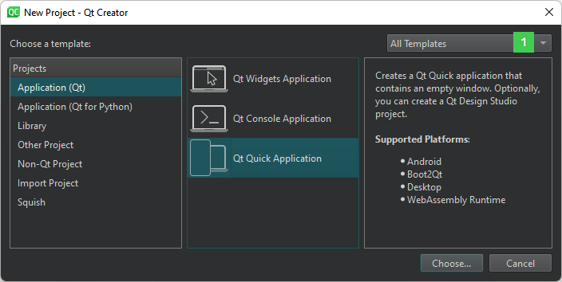

Use project wizards
To create a new project, select File > New Project and select the type of your project. The contents of the wizard dialogs depend on the project type and the kits that you select in the Kit Selection dialog. Follow the instructions of the wizard.
In the first step, you select a template for the project. You can filter templates (1) to view only those that apply to a particular target platform.

Next, you select a location for the project and specify settings for it.
When you have completed the steps, Qt Creator automatically generates the project with required headers, source files, user interface descriptions and project files, as defined by the wizard.
For example, if you choose to create a Qt Quick application, Qt Creator generates a QML file that you can modify in the Edit mode.
Select project type
The following table lists the types of wizard templates that you can use for creating projects. The New Project dialog shows detailed information about each project wizard template.
| Category | Purpose |
|---|---|
| Application | Use many UI technologies (Qt Widgets and Qt Quick) and programming languages (C++, QML, and Python) to create applications for different purposes that you can run on many target platforms (desktop, mobile, and embedded). |
| Library or plugin | Create a shared or static C++ library, a C++ plugin for Qt Quick application extensions, or a Qt Creator plugin. |
| Other project | Create custom Qt Designer widgets or widget collections, Qt Quick UI projects, subprojects, empty qmake projects, or qmake projects for testing code snippets. |
| Non-Qt project | Create plain C or C++ applications or Nim or Nimble applications (experimental). |
| Test project | Create a test project based on different supported test frameworks, such as Qt Test, Qt Quick Test, Google Test, Boost Test, or Catch2. |
| Imported project | Import projects from a supported version control system, such as Bazaar, CVS, Git, Mercurial, or Subversion. You can also import existing projects that do not use any of the supported build systems to use Qt Creator as a code editor and as a launcher for debugging and analysis tools. |
| Squish | Create new Squish test suites. |
The following video shows how to create a Qt Widgets application project:
For examples of creating different types of projects, see Tutorials.
Bind keyboard shortcuts to wizards
If you use a wizard regularly, you can bind a custom keyboard shortcut to it. Triggering this keyboard shortcut directly opens the wizard, so you do not need to navigate to File > New File or New Project.
Set keyboard shortcuts for wizards in Preferences > Environment > Keyboard > Wizard. All wizard actions start with Impl there.
See also Assign keyboard shortcuts, Activate kits for a project, Create files, How To: Test, How To: Create Projects, and Creating Projects.